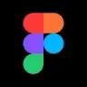
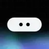
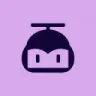
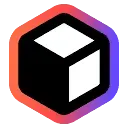
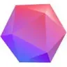
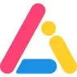
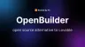

МолекулаАгрегаторы нейросетей
Молекула объединяет модели для текстов, изображений, видео и музыки. В одном аккаунте можно подобрать инструмент под этап работы, сохранить инструкции проекта и использовать готовые роли.
К задаче в МолекулеКонструкторы сайтов и интерфейсов: Опишите действия пользователя и состояния экрана. Сравните редактирование, мобильный вид и возможность получить код.
Опишите экран записи к специалисту, порядок выбора услуги и важные состояния формы. Инструмент дизайна предлагает макеты интерфейсов по описанию или референсу; полученный вариант используйте для обсуждения композиции и проверки понятности пользовательского пути.
Подготовь макет мобильного экрана записи в мастерскую: выбор услуги, дата, время и контакт. Покажи состояния пустой формы, ошибки и успешной записи. Используй спокойные цвета и читаемые подписи.

Молекула объединяет модели для текстов, изображений, видео и музыки. В одном аккаунте можно подобрать инструмент под этап работы, сохранить инструкции проекта и использовать готовые роли.
К задаче в Молекуле
В инструменте «Builder.io» можно создавать основу сайта или приложения. Ещё одно направление работы: собирать рабочие инструменты и операции с данными.

Glitching AI рассчитан на задачи, где нужно собирать видеосцену по описанию или визуальному исходнику. Ещё одно направление работы: исследовать тему и разбирать найденную информацию.

Beautiful.ai предназначен для сборки визуально оформленной презентации. Структура слайдов должна помогать объяснять материал, а не заменять проверку фактов.

Rocket.new используют, чтобы создавать основу сайта или приложения. Ещё одно направление работы: собирать рабочие инструменты и операции с данными.

В инструменте «StoreBuild.ai» можно готовить материалы о товарах и услугах. Ещё одно направление работы: создавать основу сайта или приложения.

10Web соединяет создание сайта на WordPress с его дальнейшим размещением и настройкой. Описание проекта используется для подготовки основы, которую затем нужно наполнить и проверить.
CoderChat рассчитан на задачи, где нужно создавать основу сайта или приложения. Ещё одно направление работы: создавать и уточнять визуальный макет.

Figma предназначена для разработки интерфейсов и совместной работы над макетом. Результат стоит проверять через состояния экрана и реальные действия пользователя.
Thesys используют для задачи: создавать основу сайта или приложения. Ещё одно направление работы: создавать и уточнять визуальный макет.
Lovable создаёт веб-приложения по словесному заданию: интерфейс, серверную часть и работу с данными. Проект можно уточнять в диалоге и передавать в обычный процесс разработки.

В инструменте «Spline» можно готовить трёхмерный объект для проекта. Ещё одно направление работы: создавать основу сайта или приложения.

Camille используют для задачи: редактировать уже написанный материал. Ещё одно направление работы: создавать основу сайта или приложения.

Emergent относится к инструментам, которые помогают создавать основу сайта или приложения. Ещё одно направление работы: работать с заданным образом ИИ-персонажа.

Framer AI помогает создавать и менять страницы сайта по описанию. Результат редактируется на холсте; перед публикацией нужно проверить содержание, адаптивность и действия посетителя.

Heights Platform используют, чтобы создавать основу сайта или приложения. Ещё одно направление работы: собирать рабочие инструменты и операции с данными.

Mixo создаёт сайт и его содержимое по описанию проекта с помощью ИИ. В конструкторе предусмотрены список ожидания с адресами электронной почты и средства получения обратной связи. Такой набор подходит для представления ранней идеи продукта и сбора первых откликов аудитории.

Stitch относится к инструментам, которые помогают получать изображения из словесного задания. Ещё одно направление работы: создавать основу сайта или приложения.

UX Pilot рассчитан на задачи, где нужно подготавливать визуальные сцены и анимацию. Ещё одно направление работы: создавать и уточнять визуальный макет.

Visily помогает переводить наброски интерфейса в экранные макеты с использованием ИИ. Источником может служить каркас, нарисованный от руки; также предусмотрены шаблоны и построение пользовательских потоков. Инструмент предназначен для подготовки прототипов приложений и сайтов, где нужно обозначить расположение элементов и связи между экранами.
Uizard помогает проектировать интерфейсы приложений и сайтов с участием ИИ. Работа включает каркасные схемы, экранные макеты и прототипы, которые можно обсуждать совместно. Инструмент предназначен для согласования интерфейсных идей между дизайнерами, разработчиками и участниками продуктовой команды до реализации самого приложения.

Dorik используют, чтобы создавать основу сайта или приложения. Ещё одно направление работы: собирать рабочие инструменты и операции с данными.

В инструменте «Sitekick AI» можно создавать основу сайта или приложения. Ещё одно направление работы: готовить материалы о товарах и услугах.

v0 создаёт интерфейсы и веб-приложения по описанию, макету или изображению. Помогает уточнять экраны и передавать редактируемый код в процесс разработки.

Генератор Bubble готовит отправную точку веб-приложения по его описанию. Данные и поведение экранов затем можно уточнять средствами самой платформы.

Canva объединяет редактор макетов и инструменты ИИ для текста и изображений. Подходит для оформления публикаций, презентаций и материалов с редактируемыми слоями.

Claritee используют для задачи: подготавливать визуальные сцены и анимацию. Ещё одно направление работы: создавать основу сайта или приложения.

Gamma помогает создавать презентации, документы и страницы из описания и исходных материалов. Перед оформлением важно выстроить аргумент, проверить данные и испытать экспорт.

Locofy.ai используют для задачи: писать и изменять программный код. Ещё одно направление работы: создавать основу сайта или приложения.

Looka используют для задачи: создавать основу сайта или приложения. Ещё одно направление работы: получать изображения из словесного задания.

Relume используют, чтобы создавать основу сайта или приложения. Ещё одно направление работы: готовить текст по теме и требованиям к содержанию.

SlidePoint подготавливает презентацию из темы или готового текста. После генерации необходимо проверить, что смысл не потерялся при разделении материала на слайды.
Appaca переводит описание внутренней задачи в основу рабочего приложения. До генерации полезно определить записи, пользователей и действия, которые должны быть связаны в интерфейсе.

LogoAI используют, чтобы получать изображения из словесного задания. Ещё одно направление работы: готовить материалы о товарах и услугах.

B12 ориентирован на подготовку сайта компании и его содержания. После создания основы остаётся проверить страницы, формы и то, как посетитель находит нужную услугу.
Bolt.new создаёт сайты и приложения из текстового задания в браузере. Позволяет уточнять проект, смотреть код и подключать инфраструктуру для работы с данными.

Blink помогает получить основу приложения из словесного задания. Готовый интерфейс нужно проверить на реальном пользовательском действии и затем продолжить доработку.

OpenBuilder относится к инструментам, которые помогают писать и изменять программный код. Ещё одно направление работы: создавать основу сайта или приложения.

Webflow позволяет собирать сайт в визуальной среде и настраивать его структуру. Для готового проекта важны состояние интерфейса, данные и способ публикации.
Страница 1 из 1
Для сайта услуги сначала соберите сведения, по которым посетитель принимает решение. Нужны описание работы, понятные условия и способ обращения. Задание на красивую страницу без содержания оставляет генератору слишком много поводов заполнить места случайным текстом.
Framer AI помогает создавать редактируемые страницы и секции. v0 подготавливает интерфейсы и приложения, а Lovable подходит для диалоговой работы над веб-приложением. Сопоставляйте инструмент с тем, что понадобится после первого макета.
Возьмите собственный пример небольшой мастерской. Посетитель должен понять, принимается ли его устройство и как оставить заявку. Передайте перечень услуг и действующий контакт. Назовите главное действие и поясните, какие сведения нужны рядом с формой.
После генерации пройдите страницу как новый посетитель. Проверьте названия кнопок, переходы и длинные заголовки. На телефоне основная информация должна оставаться доступной. Если форма сохраняет обращение, посмотрите результат на стороне хранения, а не только сообщение на экране.
Для информационной страницы используйте собственную структуру заголовков. Ссылка на связанный материал должна объяснять, что он поможет узнать. Не превращайте каждый абзац в набор переходов: читателю важно закончить текущее действие. Прямой адрес внутренней страницы также нужно проверить после публикации.
Если проект передаётся разработчику, уточните способ получения кода и зависимости окружения. Возможность редактировать страницу на холсте не описывает автоматически перенос сервера или базы. Сохраните перечень подключений и неподготовленных частей.
Проверьте публичную версию в отдельном браузерном сеансе. Изображения, формы и относительные ссылки могут вести себя иначе после размещения. Для поисковой части задайте актуальные title и description, а рабочие закрытые разделы защищайте доступом.
Сценарии приложений подробно рассматриваются в категории No-code и Low-code. Для проверки понятности экранов используйте раздел UX. Оформление уточняйте после того, как содержание и действия соответствуют задаче.